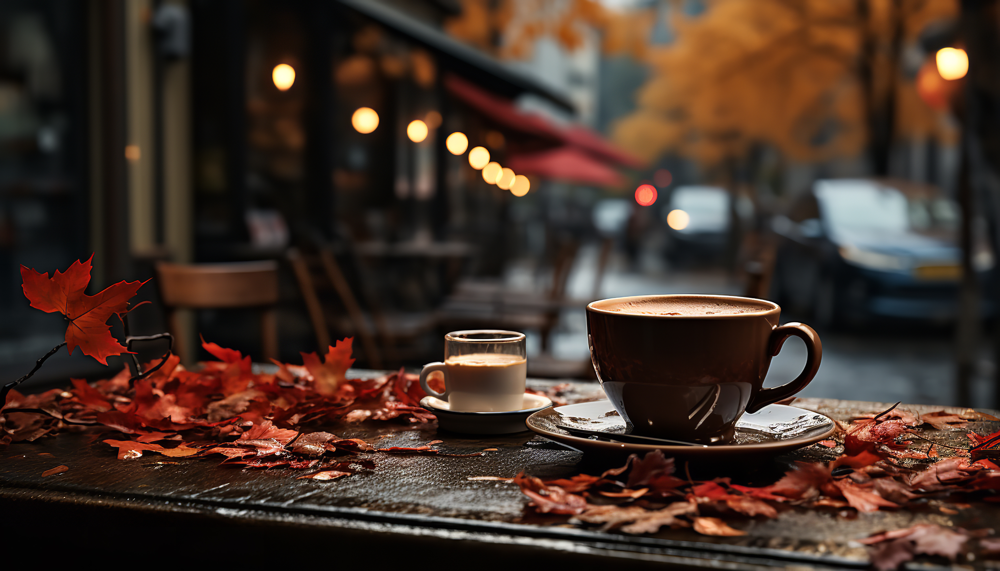
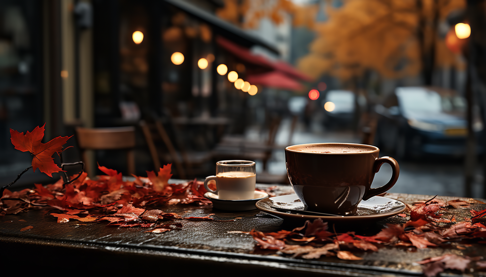

WHERE EVERYDAY IS HALLOWEEN
Welcome to Nocturne Falls, the charming and enchanting town where everyday life is anything but ordinary! Nestled amidst towering forests and mystical landscapes, Nocturne Falls is a haven for both humans and supernatural beings alike.
Step into a world where magic is not just a fantasy but a way of life. Wander down cobblestone streets lined with quaint shops adorned with whimsical decorations. Browse through spellbinding boutiques offering potions, charms, and magical trinkets that are sure to captivate your imagination.
Experience the warmth of the community as you mingle with friendly vampires, werewolves, witches, and more. Don't be surprised if you encounter a mischievous fairy fluttering by or a ghostly apparition haunting a historic building - in Nocturne Falls, the supernatural is simply part of everyday life.
Indulge your taste buds with delectable delights from charming cafes and restaurants offering a tantalizing array of cuisine, from human classics to supernatural specialties. And when the sun sets and the moon rises high, immerse yourself in the town's vibrant nightlife, where enchanting festivities and lively gatherings abound.
 

Whether you're seeking adventure, romance, or simply a break from the ordinary, Nocturne Falls welcomes you with open arms. So pack your bags and prepare for an unforgettable journey into a world where magic meets reality - right here in Nocturne Falls.